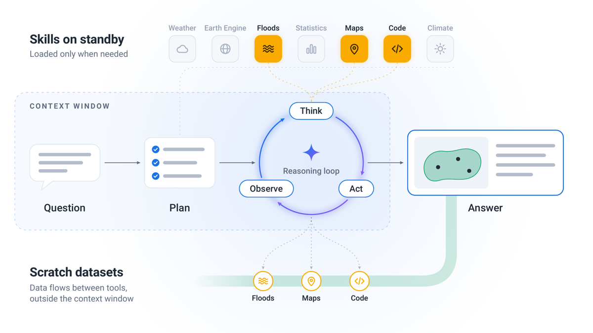
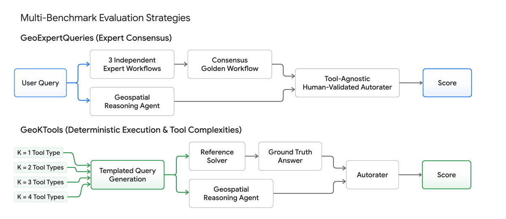
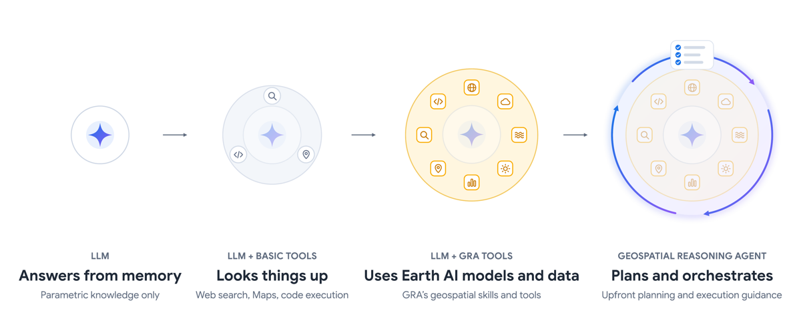

partiel — splits **dev** des deux benchmarks + prompts d'autorater + code de scoring + specs des reference solvers : https://github.com/google-research/geospatial-reasoning-benchmarks (Apache 2.0 / CC BY 4.0) [§4.3]. Splits test retenus ; l'agent GRA lui-même n'est pas publié (outils Google propriétaires).
evidence
5
evidence_manquant
[repro]
traction
non mesuré (papier publié il y a 1 semaine ; Semantic Scholar non interrogé ; aucune venue)
TL;DR — Rapport Google Research sur GRA (Geospatial Reasoning agent), agent Gemini à skills chargés à la demande + planification upfront, et surtout méthodologie d'évaluation d'un agent expert sans vérité exacte : 101 problèmes ouverts avec golden workflows écrits par 3 experts indépendants, fusionnés en consensus, notés par un autorater LLM tool-agnostic et validé contre un panel d'experts (Krippendorff α). Aucun entraînement : inférence pure, 4 configurations du même modèle.
Claim principal précis : à modèle fixé, l'ablation en escalier (LLM nu → LLM + outils génériques → LLM + skills/outils GRA en boucle réactive → GRA complet) montre que (i) les outils de domaine apportent l'essentiel du gain (GeoExpertQueries 3.3 → 52.2 avec Flash), (ii) la planification upfront + execution guidance ajoutent +10.5 points uniquement sur les problèmes ouverts et uniquement avec Gemini 3.8 Flash (52.2 → 62.7), et sont neutres voire négatives avec Gemini 3.1 Pro (50.8 → 47.6) [§5.1, Tab. 4].
Claim méthodologique secondaire, plus intéressant pour nous : l'autorater de processus est en accord avec les experts autant que les experts entre eux (α experts 0.56 ; α en remplaçant un expert par l'autorater 0.55–0.59 ; Spearman 0.72) [§4.1.4].
Origine des tâches : cas d'usage réels issus d'engagements avec des praticiens → premiers jets générés par Gemini 3.0 Flash à partir de notes et documents décrivant ces cas d'usage → révisés et édités par des membres de l'équipe Earth AI ayant une expertise géospatiale [§4.1.1]. Donc : pipeline hybride modèle + expert interne, pas de crowdsourcing.
Références : pour chaque requête, 3 experts humains indépendants écrivent un golden workflow (séquence d'étapes de raisonnement, sources de données, opérations d'analyse, caractéristiques de sortie). Ils travaillent indépendamment les uns des autres et à l'aveugle de GRA et de sa suite d'outils → les workflows reflètent les bonnes pratiques du domaine, pas les capacités de la plateforme [§4.1.1]. ⚠️ Point de design le plus important du papier.
Profil des experts (note de bas de page §4.1.1) : diplômés BSc en géospatial avec quelques années d'industrie, candidats MA en géospatial, titulaires de MSc ou PhD en géospatial. Mêmes profils pour la validation de l'autorater. Nombre d'heures, rémunération, nombre total de personnes : non précisé.
Fusion en consensus : les 3 workflows sont fusionnés automatiquement, par une procédure LLM, en un consensus golden workflow censé capturer les exigences centrales tout en tolérant la variation méthodologique légitime [§4.1.1]. ⚠️ Le modèle qui fusionne, le prompt de fusion et toute validation de la fusion : non précisés (contrairement aux prompts d'autorater, donnés en annexe).
Désaccords irréductibles : pour 4 requêtes sur 101, les 3 experts proposent des approches méthodologiquement incompatibles (ex. qualité de l'eau : 2 experts via turbidité satellite, le 3ᵉ via mesures locales aux points de captage). Ces requêtes conservent plusieurs golden workflows alternatifs et l'autorater note contre le plus proche. Les auteurs lisent cela comme une preuve que le domaine admet plusieurs approches défendables, pas comme un défaut [§4.1.1]. ⚠️ Transposable tel quel au droit.
Filtrage : sur 132 requêtes rédigées à l'origine, celles jugées clairement insolubles (données indisponibles ou propriétaires) sont retirées → 101 [§4.1.1]. Pas de filtrage par pass@k du modèle de base, pas de seuil de difficulté : le filtrage est de faisabilité, pas de difficulté.
Volume / distribution : 101 = 25 dev / 76 test, split aléatoire à l'intérieur de chaque domaine [§4.1.2] : Natural Hazards & Crisis Resilience 11/35, Public Health 5/17, Site Selection & Urban Planning 8/20, Operational & Commercial Utilities 1/4 (catégorie résiduelle, « indicatif seulement »).
Rôle du dev set : calibrer l'infrastructure d'évaluation et affiner les prompts, y compris le prompt d'autorater [§4.1.2]. Résultats rapportés sur le test uniquement.
Curriculum : sans objet (pas d'entraînement).
Contamination : les splits test sont délibérément retenus, justification explicite : un benchmark public perd son pouvoir discriminant dès que le matériel source est largement publié ou passé dans les données d'entraînement [§4.3].
Origine : 92 templates écrits par des experts du domaine (112 développés, 20 écartés « pour raisons techniques » pendant le développement), organisés par K = nombre de types d'outils requis ; 24 types d'outils au total [§4.2.1].
Pipeline : template avec trous ({region_type}, {parent_region}, {landmark_name}, {demographic_variable}, {year}) → échantillonnage aléatoire des paramètres → instanciation de la requête et exécution d'un reference solver Python qui calcule la réponse déterministe (ex. Fig. 2 : comtés du Nebraska → polygones → coordonnées de Carhenge → distances géodésiques → argmax → Data Commons médiane d'âge 2019 → ["Richardson County", 47.7]).
Volume / distribution : 305 requêtes ; templates 9/64/11/8 pour K=1/2/3/4. Dev : 18 templates → 85 requêtes (10/50/15/10). Test : 74 templates → 220 requêtes (30/110/50/30) [§4.2.2].
Anti-fuite : split au niveau du template (toutes les instances d'un template vont entièrement en dev ou en test), car les instances d'un même template partagent la logique de résolution [§4.2.2]. ⚠️ Bon réflexe, directement réutilisable.
Biais assumé : les templates ont été écrits pour requérir des opérations que les outils GRA supportent → l'avantage des configs équipées est attendu ; les auteurs disent que « l'information informative » est de savoir jusqu'où les baselines compensent par la mémoire paramétrique [§4.2, répété en limitation §6.2].
Drift de ground truth : les réponses publiées sont un snapshot au 23 sept. 2026 ; rejouer les solvers plus tard peut donner d'autres valeurs [§4.3].
Benchmarks externes [§4.4]
CBGB : 45 questions à réponse numérique unique, 3 tiers (Easy 15 / Intermediate 20 / Difficult 10), curées par des praticiens à partir du manuel Cloud-Based Remote Sensing with GEE. Modifié : 1 item Difficult exclu (sa solution de référence demande ~10 itérations de recherche binaire sur buffers de polygones, chacune une réduction Earth Engine de plusieurs minutes → dépasse les limites d'exécution) et 4 réponses de référence mises à jour (3 Intermediate, 1 Difficult) parce que les valeurs d'origine ne correspondaient plus aux données : imagerie Sentinel-2 retraitée, et dans un cas frontière d'aire protégée redessinée → 44 questions [§4.4.1]. Protocole différent de l'original (1 tentative au lieu de 3, question posée comme problème et non comme code à écrire) → non comparable aux chiffres publiés, dit explicitement.
UnivEARTH : 140 questions oui/non dérivées d'articles NASA Earth Observatory ; demande d'identifier la bonne collection d'imagerie parmi 400+ du catalogue Earth Engine. Scoring exact match ternaire, « Inconclusive » compté faux [§4.4.2].
SFT / données d'entraînement
Aucune. Pas de SFT, pas d'IFT, pas de cold start, pas de RL. Le papier est entièrement une évaluation d'inférence [§3].
2. Environnement / harness
Architecture GRA [§3.1]
Observation : le modèle voit la requête, son plan, et les sorties d'outils — mais pas les données volumineuses. Les rasters satellite, polygones de frontières et tables sont conservés comme scratch datasets dans un workspace externe et passés entre outils par référence ; l'agent les inspecte via un outil dédié et fait du traitement custom en Python plutôt que de les tirer en contexte [§3.1].
Progressive disclosure : l'agent ne voit qu'un listing de frontmatter de skills (nom + description) jusqu'à ce qu'il décide d'en charger un ; charger un skill enregistre les déclarations de fonctions natives de ce skill dans la tool config [§3.1, App. A.2]. Motivation citée : la précision de sélection d'outils chute quand le nombre d'outils déclarés augmente [§3.1, citant gan2025ragmcp, kate2025longfunceval].
Volume réel : dans les runs évalués, GRA a chargé 23 skills et appelé 62 outils distincts (domaine + workspace) [§3.1].
Imagery & EO : détection de changement de surface par embeddings (AlphaEarth Foundations, cosinus sur embeddings 64-d) ; pente de terrain (Copernicus DEM GLO-30) ; recherche/classification open-vocabulary sur imagerie aérienne US 2023-2025 (Remote Sensing Foundations models).
Weather, Climate & Hazards : prévisions ponctuelles (Google Maps Data) ; statistiques d'ensemble (WeatherNext) ; cyclones (modèle Google FNV3 via Weather Lab, NOAA IBTrACS v4) ; prévision d'inondation + réanalyse de débit 1980-2023 (Google Flood Forecasting, GRRR) ; screening de plaine inondable (GFPLAIN250m, JRC Global Surface Water) ; météo historique (ERA5, ERA5-Land, GPM IMERG V07, PRISM) ; projections climatiques à 2100 sous SSP2-4.5/3-7.0/5-8.5 (NEX-GDDP-CMIP6, Aqueduct 4.0, GloFAS, USDA WRC) ; qualité de l'air & pollen.
Population, Health & Socioeconomics : Data Commons (ACS, CDC, FEMA NRI, World Bank) ; recherche de régions similaires par embeddings PDFM.
POIs, Boundaries & Mobility : frontières administratives (Who's On First, TIGER/Line & ZCTA) ; POI (Google Maps Data) ; routes, matrices de temps de trajet, isochrones ; potentiel solaire toiture.
Cross-cutting : planification upfront avec suivi de progression ; web search (Grounding with Google Search) pour « lookups auxiliaires (dates d'événements, IDs de dataset, seuils, valeurs de référence) ».
⚠️ Signatures exactes des outils : non précisées (le tableau décrit des capacités, pas des schémas de fonctions).
Multi-turn : oui, boucle Think → Act → Observe après une étape de plan (Fig. 1). Horizon : borné par les limites d'exécution, pas par un nombre de tours : max 100 appels LLM et 30 min wall-clock par run ; dépassement de l'une des deux, ou de la fenêtre de contexte de 1M tokens → run avorté et noté zéro, reste au dénominateur, coût inclus [§3.4].
Gestion du contexte long : scratch datasets hors contexte (voir plus haut) + chargement de skills à la demande. Pas de résumé ni de mémoire explicite mentionnés.
Exécution : outils Google en production (Earth Engine, Maps Data, Data Commons, Flood Forecasting…) + Python sandboxé. Déterminisme : non — données live, d'où le snapshot daté du ground truth [§4.3] et le drift observé sur CBGB [§6]. Reset/timeouts : seules les limites globales ci-dessus sont précisées.
Gestion des erreurs — c'est là que vit l'execution guidance [§3.1] ; recopie des règles comportementales :
ne pas retomber sur le web search quand une source dédiée existe ;
traiter un résultat vide faisant autorité comme un résultat, pas comme un échec ;
traiter une requête de données comme une impasse après plus de 3 appels infructueux au même outil ;
en mode best-effort, substituer le proxy défendable le plus proche quand la mesure idéale est indisponible, et documenter les substitutions de proxy, les bornes spatio-temporelles et l'incertitude dans la réponse finale.
Mode best-effort : chaque requête, dans chaque configuration, est préfixée par "Do the following in 'best effort' mode:" pour que les refus ne soient pas comptés comme des échecs de raisonnement (par défaut GRA s'abstient quand un outil/dataset requis manque — « failing fast » est souhaitable en production). Le préfixe n'est pas montré aux autoraters, qui évaluent contre la requête d'origine [§3.4]. ⚠️ Mécanisme à noter : le harness d'éval modifie explicitement la politique d'abstention pour séparer « lacune de couverture » de « lacune de capacité analytique ».
Garde-fous de la baseline [§3.4] : en développement, LLM + Basic Tools écrivait du Python appelant des API externes ou initialisant Earth Engine ; dans le sandbox sans réseau, ces appels échouent toujours et le modèle épuise son budget en retries → zéro, ce qui reflète la friction du harness et non la capacité. Deux contrôles ajoutés : (1) dire à l'orchestrateur et au composant d'exécution de code que l'environnement Python n'a ni réseau ni librairies Earth Engine ; (2) plafonner Search à 25 appels par requête, avec le quota restant renvoyé dans chaque réponse d'outil. ⚠️ Excellent exemple d'« équité de baseline » documentée, et aveu que les scores d'agents sont très sensibles au harness.
Exemple de trajectoire : le papier ne recopie aucune trajectoire. Il donne en revanche la construction complète d'un item GeoKTools (Fig. 2, recopiée en §1 ci-dessus) et, en [App. B], l'explication en langage naturel de 3 requêtes GeoExpertQueries avec le déroulé de leur golden workflow (ex. Sierra Leone : construire une surface de friction → temps de trajet minimum depuis chaque cellule 100 m × 100 m vers la maternité qualifiante la plus proche → seuil OMS 2 h croisé avec la population féminine en âge de procréer par district).
Les 4 configurations comparées [§3.2]
Config
Contenu
Ce qu'elle isole
LLM
Gemini seul, connaissance paramétrique
plancher
LLM + Basic Tools
+ Grounding Google Search, Grounding Google Maps, Python sandboxé sans réseau
apport d'outils génériques
LLM + GRA Tools
+ catalogue complet de skills/outils GRA, scratch datasets, boucle réactive ReAct, instructions minimales, pas de plan
apport des outils de domaine
GRA
+ planification upfront + execution guidance
apport de l'orchestration
Justification explicite du refus d'un sandbox Python connecté : (i) un réseau brouillerait la frontière mesurée (un baseline qui fetch des ressources arbitraires peut fetcher du géospatial, via SDK Earth Engine authentifié ou rasters COG sur buckets publics) ; (ii) des appels ad-hoc à des REST publics (Overpass, Nominatim, Census) feraient refléter aux scores des rate limits et timeouts tiers plutôt que du raisonnement [§3.2]. Reconnu comme limitation [§6.2].
3. Reward / vérifieur
C'est la section qui m'intéresse. Deux vérifieurs très différents, plus deux externes.
3.a GeoExpertQueries — autorater de processus contre golden workflow [§4.1.3, App. A.3]
Type : LLM-as-judge, Gemini 3.8 Flash, thinking level medium (App. A.3). Entrées : requête utilisateur + golden plan (consensus expert) + trace d'exécution de l'agent (messages, appels d'outils, résultats, réponse finale).
Granularité : échelle 0 / 1 / 2 par appel, 3 passes indépendantes, mapping 0/1/2 → 0/0.5/1.0, moyenne arithmétique → score de l'item dans [0,1], rapporté ×100 [§4.1.3, note App. A.3]. Donc crédit partiel par moyenne de 3 juges, pas par décomposition en critères.
Processus, pas outcome — explicite dans le prompt : « Do NOT judge whether the final numbers, arithmetic, or conclusions are correct […] rate the workflow steps and data sources the agent actually executed ». Les auteurs en tirent la conclusion honnête en §6 : « Because the golden workflows specify steps rather than reference values, these results establish process alignment rather than outcome correctness ».
Tool-agnostic : le golden workflow est une référence, pas une checklist ; une approche compte comme suivie si un expert géospatial l'accepterait comme répondant aussi bien ; pas d'exigence sur les datasets, outils, plateformes ou l'ordre des étapes exacts. Une étape est créditée si elle est réalisée par n'importe quel moyen capable de la réaliser — outil de domaine, dataset équivalent, ou calcul Python custom. LLM + Basic Tools n'est pas pénalisé pour ne pas utiliser d'outils de domaine [§4.1.3]. ⚠️ Nécessaire ici parce qu'on compare des systèmes à surfaces d'outils différentes ; même problème exactement en juridique (bases de données propriétaires différentes).
Prétraitement : les traces sont compactées pour retirer le bruit d'exécution en préservant la séquence d'étapes d'analyse et la réponse finale ; même traitement pour toutes les configurations pour que la présentation n'avantage personne [§4.1.3].
Termes additionnels / anti-hacking — les CRITICAL PENALTY RULES du prompt, score 0 automatique (recopié App. A.3) :
1. Plan only : l'agent fournit un plan ou une description de méthode sans l'exécuter (sauf si la requête demande explicitement un plan) ;
2. No final answer : le run se termine sans réponse (arrêt ou timeout après des étapes intermédiaires) ;
3. No real analysis executed : la trace n'exécute aucune dimension de données centrale du golden plan sur des données réellement retournées par un outil (p. ex. elle repose entièrement sur des valeurs codées en dur / de mémoire, ou un lookup web générique là où une analyse géospatiale est requise), ou fabrique des sorties d'outils ou des observations.
Plus la règle « Real tool data vs hardcoded inputs » : « Hardcoding empirical figures, observations, or coordinates from memory into a script does not cover that step. »
⚠️ C'est un anti-hacking de reward écrit dans le prompt du juge : il interdit explicitement la fabrication d'observations et le hardcoding — les deux hacks naturels d'un agent qui sait ce que le juge veut voir.
DO NOT PENALIZE (recopié) : choix que le juge aurait faits autrement ; limites de traitement (échantillon, batch plafonné) qui servent encore le but de l'étape ; étapes marquées Optional ; schéma de scoring/pondération alternatif légitime ; détails techniques (projections, normalisation, unités, résolution) ; arrondis mineurs ou réordonnancement de valeurs produites par outils, ou formulation trop confiante ; cartes/graphiques manquants. Également : paramètres laissés ouverts par la requête (bornes de la zone d'étude, fenêtres temporelles, seuils, poids, scénarios, constantes de méthode standard) — « Never penalize reasonable choices ».
Règle d'impact, pas de comptage (recopié) : identifier chaque déviation (étape sautée, substitut plus superficiel, source/méthode différente, couverture plus étroite, appel d'outil échoué sans fallback adéquat) → juger de combien chacune réduit l'utilité pour un expert (none / slight / significant / fatal) → pondérer par l'effet sur la question principale, pas par le nombre. Score 2 = pas plus qu'une légère perte d'utilité ; score 1 = déviations significatives mais vraie analyse sur données d'outils ; score 0 = règle critique ou déviations fatales.
Fallbacks d'outil (recopié) : quand un outil spécialisé échoue et que l'agent pivote, ne pas pénaliser l'appel échoué lui-même ; noter le fallback comme toute autre approche.
Raisonnement forcé avant note : le prompt impose d'écrire d'abord, pour chaque dimension de données centrale du golden plan, si l'agent l'a couverte avec de vraies sorties d'outils / un fallback-proxy / manquée-hardcodée, puis chaque déviation et son impact ; la note (0/1/2) est en fin de réponse.
Robustesse au hacking : ⚠️ les règles anti-hacking existent dans le prompt, mais l'autorater n'a jamais été attaqué : aucun test adverse, et surtout aucun entraînement sous ce reward (voir §5).
Validation du juge [§4.1.4] — le cœur réutilisable
Protocole : 69 traces sur requêtes de test, échantillonnées sur les scores bas/moyens/hauts de l'autorater ; 57 produites par GRA et 12 par LLM + GRA Tools ; 35 avec Gemini 3.1 Pro, 34 avec 3.8 Flash. 3 experts indépendants (mêmes profils qu'en §4.1.1) notent chaque trace sur 3 points (Good / Partial / Poor) contre le consensus golden workflow → 207 annotations. Les annotateurs ne voient pas le score de l'autorater et ne savent pas quel modèle ni quelle configuration a produit la trace. Mapping 0/0.5/1, moyenne sur 3 experts ; autorater moyenné sur 3 passes.
Résultats :
Krippendorff α (interval) entre les 3 experts : 0.56 (IC bootstrap 95 % 0.42–0.67) ;
en ajoutant l'autorater comme 4ᵉ rater : 0.57 (0.45–0.67) ;
en remplaçant un expert quelconque par l'autorater : 0.59 / 0.55 / 0.59 ;
accord par paires autorater↔expert : 0.55 / 0.64 / 0.57, vs expert↔expert : 0.59 / 0.53 / 0.56 ;
Spearman autorater vs moyenne experts : 0.72 (0.60–0.82) ;
écart moyen par trace sur l'échelle 0–1 : 0.20, biais signé +0.01 (ni plus sévère ni plus clément) ;
87 % des traces à moins de 0.33 de la moyenne experts (moins d'une catégorie de notation) ; aucune inversion franche (aucune trace notée > 0.67 par l'autorater avec moyenne experts < 0.33, ni l'inverse).
⚠️ Mon évaluation : protocole sérieux (aveugle, IC bootstrap, test set, comparaison au plancher inter-expert plutôt qu'à un accord absolu) — c'est la bonne façon de valider un juge quand il n'y a pas de vérité exacte. Mais : (i) α = 0.56 entre experts est un plafond bas — le juge égale un panel médiocrement d'accord avec lui-même, ce qui limite ce qu'« accord » veut dire ici ; (ii) l'échantillon de validation ne contient aucune trace des deux baselines (0 trace LLM nu, 0 trace LLM + Basic Tools), or ce sont exactement les configurations qui reçoivent 0.0 et 2.3–3.3 et sur lesquelles repose le claim « les baselines sont inutilisables » — la validité du juge dans le régime bas n'est pas testée sur ces trajectoires-là ; (iii) les auteurs le concèdent : les scores absolus dépendent de la validité du workflow et de la sévérité du juge, « un autorater plus strict assignerait probablement des scores plus bas partout » [§5.2, §6.2] ; (iv) l'analyse fine de quelles substitutions de proxy un expert accepterait est explicitement renvoyée aux travaux futurs [§4.1.3, §6.2].
Chaque requête contient 1 à 7 trous ; réponse attendue en liste JSON. Match exact → 1.0 sans invoquer de juge ; réponse vide → 0 ; sinon juge LLM (Gemini 3.8 Flash) notant chaque élément entre 0 et 1, score de la requête = moyenne des éléments.
Pas de tolérance fixe : le juge évalue chaque écart dans le contexte des unités et de l'échelle du domaine (km, mm de pluie, °C, comptes, %), 4 tiers (Accurate / Minor Noise / Very Wrong / Severely Inaccurate) → score continu, « dégrade régulièrement de 1.0 à 0.0 proportionnellement à l'ampleur de l'erreur relative à l'échelle de référence ».
Règles notables du prompt (recopiées App. A.3) : « Treat the Golden Ground Truth as THE authoritative reference. Do NOT consult external real-world knowledge to validate either answer » ; Coupled Entity Invalidation — si une sous-estimation dépend de l'identification d'une entité et que l'entité est fausse, les métriques dépendantes valent 0 ; Threshold & Occurrence Sensitivity — quand la référence est zéro, prédire du non-zéro est un faux positif pénalisé ≤ 0.10 ; Arithmetic Mean Rule — l'overall_score DOIT être la moyenne arithmétique exacte des element_scores ; équivalences de formatage (JSON, casse, abréviations d'État) = 1.0.
Fiabilité mesurée : non. Aucun accord juge/humain rapporté pour cet autorater-là. En revanche le papier démontre empiriquement son biais : le crédit partiel proportionnel récompense les estimations plausibles tirées de la mémoire — appliqué à CBGB, il fait gagner 31 à 41 points aux baselines contre ~8 aux configs outillées, ce qui « réduit l'écart sans changer le classement » et justifie de rapporter le critère d'origine [§5.4]. ⚠️ Leçon de reward design : un reward continu et généreux est précisément celui qui est le plus exploitable par du bluff informé. À retenir pour un reward juridique gradué.
3.c Vérifieurs externes
CBGB : critère d'origine déterministe, match à 2 chiffres significatifs, aucun jugement de modèle [§4.4.1].
UnivEARTH : exact match ternaire Yes/No/Inconclusive, Inconclusive compté faux [§4.4.2].
4. Optimisation
Aucune optimisation de politique. Il n'y a pas d'entraînement dans ce papier. Pas de GRPO/PPO/DPO, pas de reward model entraîné, pas de KL, pas de rollouts d'entraînement, pas de courbes de reward. Les seuls « hyperparamètres » sont ceux de l'inférence et du harness [§3.3, §3.4] :
décodage par défaut, température par défaut (valeur non précisée) ;
thinking level par défaut : high pour Gemini 3.1 Pro, medium pour Gemini 3.8 Flash ;
autoraters : Gemini 3.8 Flash, thinking medium (App. A.3) ;
budget par run : 100 appels LLM, 30 min, contexte 1M ; dépassement → score 0 [§3.4] ;
Search plafonné à 25 appels/requête pour LLM + Basic Tools uniquement [§3.4] ;
3 répétitions de chaque requête par configuration et par modèle ; chaque répétition produit un jeu complet de scores agrégé en un score de benchmark → 3 scores par configuration ; moyenne ± écart-type sur ces 3. Les auteurs précisent que l'écart-type rapporté reflète la variabilité run-à-run du score agrégé, pas la variance entre requêtes [§3.4]. ⚠️ Honnête et important : ces ± ne sont pas des IC sur la moyenne par item.
La « comparabilité » est obtenue en gelant le modèle et en ne faisant varier que la couche capacités/orchestration — c'est l'analogue, côté éval, d'une ablation appariée. Les auteurs revendiquent que personne n'avait fait varier la couche de capacités elle-même [§2].
Lien explicite avec l'absence d'entraînement : « modular skills let the system's capabilities grow without retraining the model » [§6.1]. La thèse du papier est anti-post-training : la connaissance de la planète est trop vaste et change trop vite pour tenir dans des poids ; la valeur d'un bon modèle est dans le raisonnement et l'usage des bons outils. Ils citent AtmosSci-Bench [li2025atmossci] comme appui : les modèles fine-tunés sur le domaine sous-performent les modèles de raisonnement généraux, « ce qui suggère que la spécialisation de domaine au niveau du modèle n'est pas là où se trouve l'avantage » [§2]. ⚠️ Argument à connaître — c'est exactement la thèse adverse d'un programme « Gemini Law » par post-training, et elle vient d'une équipe Google. À noter : l'appui cité est un benchmark de connaissance sans usage d'outils, donc la généralisation à des agents RL-entraînés n'est pas établie.
5. Failure modes & reward hacking
Pas de reward hacking au sens RL (rien n'est optimisé). Mais le papier documente plusieurs failure modes d'agent et deux pathologies de benchmark, chacun avec détection et correction.
#
Comportement
Comment détecté
Correction
1
LLM + Basic Tools écrit du Python appelant des API externes / initialisant Earth Engine ; dans le sandbox sans réseau tout échoue et le modèle brûle son budget en retries → run avorté, score 0
runs de développement
dire explicitement aux deux composants qu'il n'y a ni réseau ni librairies EE [§3.4]
2
Même config : quand la donnée n'est pas sur le web ouvert, le modèle reformule indéfiniment ses recherches au lieu de conclure à l'indisponibilité ; « tended to assume that some combination of its tools could answer any query, and rarely concluded otherwise »
idem
plafond de 25 appels Search avec quota restant renvoyé dans chaque réponse d'outil [§3.4]
3
Ancrage par choix d'outil précoce : LLM + GRA Tools (Flash) traite les requêtes « hazards » comme des questions de lookup — dans un tiers de ses runs sur ce domaine il commence par charger uniquement le skill web search, et la plupart de ces runs ne passent jamais à l'analyse géospatiale, scorant sous 10 en moyenne
la planification upfront + l'instruction « ne pas retomber sur le web search quand une source dédiée existe » évitent largement ce pattern → +20.4 points sur Crisis Resilience [§5.2]
4
Sur-conformité au plan (effet inverse) : Gemini 3.1 Pro adhère plus strictement au plan et aux règles opérationnelles (limiter les appels répétés, préférer les outils dédiés au code custom) ; il exécute donc moins les étapes de bonnes pratiques que les workflows experts attendent mais que la requête ne dit pas (ex. masquer les plans d'eau avant de calculer la surface constructible) → GRA < LLM + GRA Tools avec Pro
comparaison des 2 configs par domaine + inspection des traces
aucune ; les auteurs notent le trade-off : ces règles sont utiles en production (couper les boucles improductives) mais pénalisantes en éval [§5.2]
5
Arrêt sur proxy faible : sur Site Selection, les deux configs rencontrent les mêmes échecs d'outils (POI vides, historique de qualité de l'air indisponible) ; LLM + GRA Tools récupère plus souvent en écrivant du code custom ou en consultant une source auxiliaire, GRA tend à finir ses étapes planifiées et à s'arrêter sur un proxy plus faible
Tab. 5 par domaine + traces
aucune [§5.2]
6
Saturation de benchmark : UnivEARTH — le LLM nu répond à 100 % des questions sans aucun calcul (et 90.2 % correctement) ; LLM + Basic Tools répond à 95.6 % sans invoquer l'exécution de code et à 5.7 % sans aucun outil (10.2 % Pro / 1.2 % Flash) ; les questions dérivent d'articles NASA dont le texte énonce les conclusions
instrumentation des traces (part de questions résolues sans outil/sans calcul)
rapporter UnivEARTH comme un constat de durabilité de benchmark, pas comme une mesure de capacité ; retenir les splits test des benchmarks internes [§5.5, §4.3]
7
Drift du ground truth : 4 valeurs de référence CBGB ne correspondaient plus aux données (Sentinel-2 retraitée, frontière d'aire protégée redessinée)
inspection à l'exécution
mise à jour des 4 références ; conclusion générale : « les benchmarks géospatiaux exigent une revalidation périodique de leur vérité terrain plutôt qu'une construction unique » [§6]
8
GRA, en suivant le vrai chemin analytique sur UnivEARTH, charge le skill Earth Engine dans 60.8 % des cas et s'expose aux échecs d'exécution (29.0 % des cas) — il est donc pénalisé pour avoir fait le travail
traces [§5.5]
aucune ; c'est l'argument de saturation
⚠️ Comportement émergent le plus instructif (#3 + #4) : l'effet de l'orchestration dépend du modèle et s'inverse. La même couche de guidance qui sauve Flash (qui dévie du plan quand l'exécution l'exige) bride Pro (qui s'y tient). Les auteurs le disent : « orchestration must be matched to the model » [§6]. Pour nous : une execution guidance écrite à la main est un hyperparamètre couplé au modèle, pas un acquis — argument en faveur de l'apprendre plutôt que de la prompt-engineerer.
⚠️ Ce que le papier ne mentionne pas : aucun cas où l'agent gonfle sa trace pour plaire au juge de processus (étapes exécutées pour la forme, appels d'outils décoratifs). Vu que le reward est explicitement « as-tu exécuté les étapes du workflow expert », c'est le hack évident, et le prompt du juge ne s'en défend que par la règle « weigh by impact, not step count ». En inférence pure sans pression d'optimisation, son absence est crédible ; sous RL, ce serait le premier mode d'échec à surveiller.
6. Infra & coût
Débit de rollouts / parallélisme / sync-async : non précisé. Aucune donnée d'infra d'entraînement (il n'y en a pas), ni de throughput d'évaluation, ni de GPU/TPU-heures.
Coût par requête rapporté en USD [Tab. 9], calculé depuis les comptes de tokens input / cached-input / output / thinking aux tarifs d'octobre 2026 (pour Gemini 3.1 Pro, cela inclut le tarif majoré au-delà de 200K tokens), coût des runs échoués inclus ; couvre l'inférence modèle seule, pas les services de données/calcul externes (Earth Engine) [§4].
GeoKTools : GRA $0.360 / $0.122 vs LLM + Basic Tools $0.575 / $0.112.
CBGB : GRA $0.151 / $0.093 vs LLM + Basic Tools $0.514 / $0.132.
Résultat contre-intuitif [§5.6] : GRA coûte souvent moins cher que LLM + Basic Tools tout en scorant bien plus haut (CBGB Pro : $0.151 vs $0.514 pour 84.8 vs 13.6) — la baseline dépense massivement en tentatives qui n'aboutissent pas. ⚠️ Transposable : une baseline mal outillée n'est pas une baseline bon marché.
Le gain de +10.5 points de l'orchestration coûte ~3 cents par requête ($0.199 vs $0.167) [§5.6].
Goulot d'étranglement documenté — progressive disclosure vs prefix cache [App. A.2], le passage le plus utile pour un harness maison : charger un skill enregistre ses déclarations de fonctions natives dans la tool config de l'API, ce qui préserve l'alignement post-training du function calling et permet un décodage validé par schéma (important pour des arguments complexes). Mais les API d'inférence exigent que les déclarations d'outils se trouvent dans la configuration de requête avec l'instruction système, en amont de l'historique : muter la tool config en cours de trajectoire change la structure de requête près de son début et invalide le cache KV de préfixe au-delà, forçant un re-prefill de toute la conversation accumulée. Charger les skills un par un, tard, après de grosses sorties d'outils, est donc cher. Deux mitigations : (1) protocolaire — les items tool search / additional tools de l'API Responses d'OpenAI (mars 2026) permettent d'ajouter les schémas à l'historique plutôt qu'à la config, préservant le préfixe caché ; non disponible dans l'API utilisée ici ; (2) architecturale — exposer un unique « runner tool » générique et passer la fonctionnelle en arguments (ce que font les skill scripts) : pas d'invalidation de cache sur aucune API, mais on renonce à l'entraînement dédié du function calling et à la validation de schéma, ce qui peut baisser les taux d'invocation réussie. Choix de GRA : garder les déclarations natives et mitiger comportementalement — instruire l'agent de charger tôt et ensemble les skills de domaine qu'il pense nécessaires, avant que de grosses sorties d'outils s'accumulent.
7. Résultats & signal
7.0 Chiffres annoncés vs chiffres tabulés
Chiffre annoncé
Où il est annoncé
Source dans le papier
Verdict
GRA « scores 63 » sur GeoExpertQueries
abstract (« it scores 63 »), §1
Tab. 4 : 62.7 ± 2.5 (GRA / 3.8 Flash) ; GRA / 3.1 Pro = 47.6 ± 2.7
sur-généralisé (arrondi exact, mais c'est la meilleure des deux cellules modèle ; avec Pro, GRA = 47.6 et perd contre LLM + GRA Tools)
« On GeoKTools it scores 86 against 41 for the strongest baseline »
« on CBGB it scores above 80 while neither baseline exceeds 20 »
§1
Tab. 4 : GRA 84.8 / 86.4 ; baselines 12.9–19.7
confirmé
« from 3 to 52 on GeoExpertQueries with Gemini 3.8 Flash » (apport des outils)
§1
Tab. 4 : 3.3 ± 0.8 → 52.2 ± 5.4
confirmé
« raising GeoExpertQueries from 52 to 63 » (apport du planning)
§1, abstract
Tab. 4 : 52.2 → 62.7, soit +10.5
confirmé, mais vrai uniquement avec Flash ; avec Pro : 50.8 → 47.6 (−3.2). Dit en §5.1/§5.2, pas dans la phrase de l'abstract
« every configuration […] scores above 85 » (UnivEARTH)
§1
Tab. 8 : min = 86.9 ± 1.8 (LLM 3.1P)
confirmé
« a standalone LLM scoring 87 to 94 » (UnivEARTH)
§4, §6
Tab. 8 : 86.9 et 93.6
confirmé (arrondis)
« Flash to match or exceed Pro at lower cost »
abstract
Tab. 4 + Tab. 9 : dans GRA, Flash > Pro sur les 4 benchmarks (+15.1 / +4.3 / +8.6 / +1.6) et moins cher de 38–71 %
confirmé ; le +1.6 de CBGB est dans la variation run-à-run, les auteurs le disent [§5.6]
« GRA performs well on both » (templated + open-ended)
abstract
Tab. 4
sur-généralisé : sur GeoKTools et CBGB, LLM + GRA Tools égale ou dépasse GRA (84.5 vs 81.6 ; 87.9 vs 86.4) — l'apport de GRA au-delà de ses outils n'existe que sur l'open-ended + Flash. Divulgué en §5.1
« 101 open-ended problems (76 held out) », « 92 templates spanning 24 tool types », « 305 templated queries, 220 held out »
confirmé mais ⚠️ validation faite uniquement sur des traces GRA (57) et LLM + GRA Tools (12) — aucune trace des deux baselines, dont les scores quasi nuls portent pourtant le claim principal
« UnivEARTH […] best systems reached roughly 33 % » dans l'éval d'origine
§4.4.2
attribué à kao2026univearth, pas re-mesuré ici
introuvable dans ce papier (citation externe, non vérifiable depuis la source fournie)
Verdict 7.0 : cohérence interne bonne, arrondis honnêtes, écarts de protocole déclarés. Les deux réserves sont des sur-généralisations de cadrage : le « 63 » et le « GRA performs well on both » masquent que la couche d'orchestration ne gagne que dans un réglage sur deux modèles et un benchmark sur trois. Le corps du texte le dit clairement — c'est l'abstract qui lisse.
Détails notables :
- Le LLM nu score exactement 0.0 dans les quatre domaines, avec les deux modèles sur GeoExpertQueries : l'autorater ne crédite que ce qui est produit par récupération ou calcul [§5.2]. LLM + Basic Tools score 0 à tous les runs sur plus de 80 % des requêtes [§5.2].
- Par domaine [Tab. 5], le gain de GRA (Flash) vient surtout de Crisis Resilience +20.4 (45.6 → 66.0, n=35) et Public Health +13.1 (42.5 → 55.6, n=17, mais σ=10.2 côté LLM + GRA Tools) ; Site Selection est négatif (71.4 → 65.6) et Operational aussi (55.6 → 50.0, n=4).
- GeoKTools par K [Tab. 6] : les baselines déclinent avec K (39–52 à K=1,2 → 27–36 à K=3,4) ; les configs outillées restent plates, 79.4–91.2 à tous les K. Les auteurs refroidissent eux-mêmes la lecture : K compte des types d'outils, pas la difficulté intrinsèque, et les cellules K=1,3,4 ne contiennent que 6–9 templates, donc quelques templates peuvent déplacer une cellule [§5.3]. Conclusion : K est « un proxy utile mais imparfait » de la complexité — il traque la difficulté pour les baselines, pas pour les systèmes outillés.
- CBGB par tier [Tab. 7] : LLM + GRA Tools 100.0 ± 0.0 sur Easy avec les deux modèles ; GRA 95.6 / 97.8 Easy, 80.0 / 81.7 Intermediate, 77.8 / 77.8 Difficult. Baselines : ~0–11 sur Difficult.
- Usage des capacités [Tab. 10] : sous GRA/Flash, Prediction & Spatial Compute chargé sur 99 % des requêtes, POIs/Boundaries 89 %, mais Imagery & EO ≤ 4 % et les skills les plus spécialisés (prévision météo, similarité régionale) < 3 % chacun — autrement dit, le benchmark n'exerce presque pas les actifs propriétaires les plus différenciants, ce que les auteurs reconnaissent [§6.1].
In-distribution vs OOD / transfert
Pas de transfert au sens RL (rien n'est entraîné). L'équivalent le plus proche : la corroboration externe par CBGB, benchmark construit hors projet, qui reproduit le classement (outils ≫ baselines) [§5.4] ; et le contre-exemple UnivEARTH, où la hiérarchie s'effondre pour cause de saturation [§5.5].
Généralisation inter-modèles : testée sur deux modèles seulement, et le résultat est que la conclusion sur l'orchestration ne se transfère pas d'un modèle à l'autre [§5.1–5.2]. Généralisation hors famille Gemini : non testée, limitation déclarée [§6.2].
Ablations — quel ingrédient compte
Ingrédient retiré
Effet mesuré
Outils de domaine (GRA Tools → Basic Tools)
−49 points sur GeoExpertQueries (52.2 → 3.3, Flash) ; −45 sur GeoKTools ; −68 sur CBGB. C'est l'ingrédient dominant
Orchestration (GRA → LLM + GRA Tools)
+10.5 sur GeoExpertQueries avec Flash seulement ; −3.2 avec Pro ; ≈0 ou légèrement négatif sur GeoKTools et CBGB
Critère de scoring déterministe → autorater permissif (CBGB)
baselines +31 à +41, configs outillées +8 : le classement tient mais l'écart se referme [§5.4]
Plan vs execution guidance séparément
non mesuré, limitation déclarée [§6.2]
Consensus de 3 experts vs 1 expert
non mesuré
Nombre de passes de l'autorater (3)
non mesuré
Scaling
Pas de scaling de taille de modèle au sens propre : deux modèles qui diffèrent à la fois en tier de capacité, en génération de release et en thinking level par défaut — les auteurs le disent explicitement, « les différences reflètent l'effet combiné de ces facteurs » [§3.3]. Le résultat (Flash récent > Pro ancien, à 38–71 % moins cher) est donc une observation produit, pas une loi d'échelle.
Solidité
✅ Baselines fortes et appariées : même modèle sous-jacent dans les 4 configurations, deux modèles, 4 benchmarks dont 2 externes ; c'est précisément la contribution méthodologique revendiquée [§2, §3.2].
⚠️ Baseline affaiblie par construction : le sandbox Python de LLM + Basic Tools est sans réseau — choix argumenté (§3.2) et reconnu comme limitation (§6.2), mais il rend le « 3.3 » non interprétable comme la vraie borne supérieure d'un LLM outillé génériquement.
✅ Ablations qui isolent : l'échelle à 4 barreaux sépare outils / orchestration. ⚠️ Elle ne sépare pas plan et execution guidance.
✅ Variance : 3 runs, ± sur chaque cellule, IC bootstrap sur les α. ⚠️ Le ± porte sur le score agrégé, pas entre requêtes ; 3 runs restent peu ; les cellules n=4 (Operational) et n=9 (CBGB Difficult) sont bruitées.
⚠️ Fiabilité de l'éval : juge validé contre 3 experts en aveugle (fort) — mais seulement sur des traces des deux configs hautes, α inter-experts seulement 0.56, et les scores absolus dépendent de la sévérité du juge (concédé). Contamination traitée de façon exemplaire (saturation UnivEARTH démontrée par instrumentation, splits test retenus, drift CBGB corrigé).
⚠️ Échelle : 76 + 220 + 44 + 140 items, ×3 runs ×8 systèmes. Correct pour une éval experte, petit pour des conclusions par domaine.
❌ Reproductibilité : seuls les splits dev (25 + 85 requêtes), les prompts d'autorater, le code de scoring et les specs des solvers sont publiés ; les splits test sont retenus par design, et GRA repose sur des outils et modèles Google propriétaires + deux versions de Gemini non publiques. Personne hors de Google ne peut reproduire la comparaison. Les prompts d'autorater en annexe sont néanmoins immédiatement réutilisables.
Verdict : solide pour le claim « outils de domaine ≫ pas d'outils » et pour la méthodologie d'évaluation ; plausible mais fragile pour le claim sur l'orchestration (vrai dans 1 réglage de modèle sur 2, 1 benchmark sur 3, avec une explication post-hoc par inspection de traces). La contribution durable n'est pas le score de GRA — c'est le protocole golden-workflow + autorater validé + la démonstration que les benchmarks de ce type se dégradent de deux façons distinctes (saturation, drift des données).
8. Figures

Ce qu'il faut voir : le contrat de contexte de l'agent. En haut, les skills (Weather, Earth Engine, Floods, Statistics, Maps, Code, Climate) sont hors contexte tant qu'ils ne sont pas chargés — seuls 3 sont allumés ici. Au centre, la séquence Question → Plan → boucle Think/Act/Observe → Answer, entièrement dans la fenêtre de contexte. En bas, les scratch datasets : les données circulent d'outil en outil par-dessous le contexte et ne remontent qu'en réponse finale. Les deux mouvements hors contexte (déclarations d'outils, données) sont ce qui permet 23 skills / 62 outils [§3.1] — et App. A.2 explique le prix payé : chaque chargement de skill invalide le cache KV de préfixe.

Ce qu'il faut voir : les deux façons de construire un vérifieur quand la vérité exacte manque ou existe. En haut, la voie « pas de vérité exacte » : requête → 3 workflows experts indépendants → consensus golden workflow → autorater tool-agnostic et validé par des humains qui compare la trajectoire de l'agent au workflow, pas sa réponse à une valeur. En bas, la voie « vérité exacte fabriquée » : templates paramétrés → reference solver → ground truth → autorater à crédit partiel. Le papier utilise les deux et montre que la seconde, trop généreuse, récompense le bluff (CBGB, +31 à +41 points pour les baselines [§5.4]). C'est exactement le dilemme d'un reward juridique.

Ce qu'il faut voir : l'échelle d'ablation, lisible d'un coup : « answers from memory » → « looks things up » (Search, Maps, code) → « uses Earth AI models and data » (mêmes skills, boucle réactive) → « plans and orchestrates ». Modèle gelé sur les 4 barreaux. C'est le design expérimental qu'il faut copier pour mesurer ce qu'apporte un harness juridique : faire varier la couche capacités autour d'un modèle fixe, et non l'inverse — ce que les évals d'agents géospatiaux antérieures ne faisaient pas [§2].
9. Transférabilité vers le juridique
⚠️ Avertissement de cadrage : le domaine (télédétection, Earth Engine, prévision d'inondation) n'a rien à voir avec le droit, et il n'y a aucune recette RL à transposer — c'est de l'inférence pure, sans entraînement, sans reward optimisé, sans un seul gradient. La note de 4 ne porte que sur le protocole d'évaluation / construction de vérifieur sans vérité exacte, qui est lui très proche de notre problème (réponses longues, plusieurs méthodes défendables, sources qui bougent, experts chers).
Ingrédient
Choix du papier
Équivalent juridique
Transfert
Ce qui manque
Source des tâches
Cas d'usage praticiens → brouillons générés par Gemini 3.0 Flash → édition par experts internes ; 132 → 101 après retrait des insolubles [§4.1.1]
Mandats réels anonymisés (mémos, recherches, due diligence) → brouillons LLM → édition par juristes maison
direct
Rien de conceptuel. Le filtrage « insoluble » est plus dur en droit : une question sans réponse nette n'est pas insoluble, elle est le cas intéressant
Référence sans vérité exacte
3 experts indépendants, à l'aveugle des outils du système, écrivent chacun un golden workflow ; fusion LLM en consensus ; 4/101 cas irréconciliables conservés comme alternatives, notés contre la plus proche [§4.1.1]
3 avocats indépendants décrivent la démarche de recherche attendue (sources à consulter, juridictions, autorités clés, contre-arguments, limites à signaler), aveugles à notre stack
direct — c'est le meilleur ingrédient du papier
Le coût (3 experts × N requêtes, profils MSc/PhD) ; la fusion LLM n'est pas validée dans le papier ; en droit les désaccords irréductibles seront bien plus de 4 %
Vérifieur
LLM-as-judge (Gemini 3.8 Flash) sur la trajectoire, 0/1/2 × 3 passes → [0,1] ; tool-agnostic ; impact plutôt que comptage d'étapes ; 0 automatique si plan-only / pas de réponse / pas d'analyse réelle / valeurs hardcodées / sorties d'outils fabriquées [§4.1.3, App. A.3]
Juge de processus de recherche : les bonnes sources ont-elles été réellement ouvertes et lues, les citations proviennent-elles d'une récupération et non de la mémoire, la juridiction est-elle traitée, les limites déclarées. 0 automatique si une citation n'a pas été récupérée par un outil
adaptable (prompt réécrit, structure conservée)
Le papier refuse explicitement de juger la correction du résultat (« Do NOT judge whether the final numbers […] are correct ») : en droit, process alignment ne suffira pas — il faut au moins un étage factuel (la citation existe-t-elle, dit-elle ce qu'on lui fait dire ?)
Validation du vérifieur
69 traces test, 3 experts en aveugle (ni score ni config), 207 annotations ; Krippendorff α comparé au plancher inter-expert ; Spearman ; écart moyen ; % à < 1 catégorie ; absence d'inversions [§4.1.4]
Identique, avec des avocats
direct — à copier tel quel comme standard interne
La validation du papier exclut les configs basses ; pour nous, valider surtout dans le régime où le RL va pousser (scores hauts) et sous perturbation adverse
Harness / outils
Skills en progressive disclosure, scratch datasets hors contexte, 23 skills / 62 outils, déclarations natives + chargement « tôt et groupé » contre l'invalidation du cache KV [§3.1, App. A.2]
Skills « recherche jurisprudence / législation consolidée / doctrine / analyse de contrat / vérification de citation », corpus volumineux hors contexte passés par référence
adaptable
Le trade-off cache KV vs validation de schéma est le même problème pour nous et la mitigation est purement comportementale ici
Anti-hacking
Règles de pénalité critique dans le prompt du juge (hardcoding, fabrication, plan-only) ; choix du critère déterministe plutôt que du crédit partiel sur CBGB, précisément parce que le crédit partiel récompense l'estimation plausible [§5.4]
Pénalité automatique sur citation non récupérée / inventée ; se méfier d'un reward gradué « qualité d'argumentation »
direct comme principe de design
Aucun test adverse, aucune pression d'optimisation : non testé là où ça compte pour nous
Algo / curriculum
sans objet (aucun entraînement)
—
non
Tout
Durabilité du benchmark
Splits test retenus ; saturation démontrée par instrumentation (% de questions résolues sans outil) ; drift corrigé (4 références CBGB) ; revalidation périodique recommandée [§4.3, §5.5, §6]
Droit positif qui change (revirements, réformes), réponses correctes qui périment
direct
Rien — c'est un argument, pas une technique
Meilleur ingrédient à transposer
Le triptyque golden workflow → autorater de processus tool-agnostic → validation contre un panel d'experts avec le plancher inter-expert comme étalon. Raison : c'est la seule façon rigoureuse exhibée ici de produire un signal dense sur une tâche experte où (i) il n'existe pas de vérité exacte, (ii) plusieurs méthodes sont défendables, (iii) les systèmes comparés n'ont pas les mêmes outils — les trois propriétés exactes de la recherche juridique. Le point crucial, qui coûte peu et change tout, est que les experts écrivent la référence à l'aveugle de notre stack : sinon le golden workflow devient la documentation de nos outils et le reward devient circulaire. Corollaire : ne pas réconcilier de force les désaccords d'experts — garder les alternatives et noter contre la plus proche.
Et la mise en garde la plus utile : le crédit partiel proportionnel récompense le bluff informé (+31 à +41 points pour les baselines sur CBGB [§5.4]). Un reward juridique gradué « sur la qualité de l'argumentation » est, par construction, le reward qu'un modèle peut remplir sans avoir rien cherché.
Expérience minimale
Sur ~60 questions de recherche juridique (style Vals Legal Research Bench), faire écrire par 3 juristes indépendants et aveugles à notre stack une golden research workflow (autorités à consulter, juridictions, points de contrôle, limites à signaler), fusionner en consensus, puis noter les trajectoires d'un Gemini outillé avec un autorater de processus reprenant la structure du prompt App. A.3 — y compris les règles de pénalité critique (pas de crédit pour une citation non récupérée par un outil ; 0 si fabrication). Puis valider le juge sur ~70 trajectoires notées en aveugle par 3 avocats, et rapporter α du panel, α en remplaçant un juriste par le juge, Spearman, écart moyen, % à moins d'une catégorie.
Résultat attendu : accord juge/juristes du même ordre que l'accord inter-juristes, mais avec un plancher inter-expert probablement plus bas qu'en géospatial (α < 0.5 plausible en droit) — auquel cas la conclusion opérationnelle est que ce signal convient comme reward de rang entre configurations, pas comme reward absolu, et qu'il faut l'appuyer sur un étage factuel vérifiable (existence et exactitude des citations) avant toute optimisation RL.
Question à poser en interne chez GDM
Trois, par ordre d'utilité :
1. Qui a les experts ? L'équipe Earth AI a mis en place un vivier d'annotateurs MSc/PhD capables d'écrire des workflows de référence et de noter des traces en aveugle. Quel est le process interne, le coût, et est-il mutualisable pour un vivier d'avocats annotateurs ? (Le papier ne donne ni heures ni budget.)
2. La procédure de fusion LLM des workflows experts existe-t-elle en interne ? Elle n'est ni décrite ni validée dans le papier alors que les prompts d'autorater, eux, sont publiés — demander le prompt et toute mesure de qualité de la fusion.
3. Un autorater de processus validé survit-il à la pression d'optimisation ? GRA n'est pas entraîné ; nous, si. Personne chez Google ne semble avoir publié de test adverse d'un juge de processus sous RL — si c'est aussi vrai en interne, c'est une contribution à faire, pas seulement un risque à gérer. Au passage : leur thèse explicite est que la spécialisation de domaine au niveau du modèle n'est pas là où est l'avantage [§2, §6.1], ce qui contredit frontalement un programme de post-training juridique ; savoir si c'est une position d'équipe ou un argument de circonstance vaut une conversation.